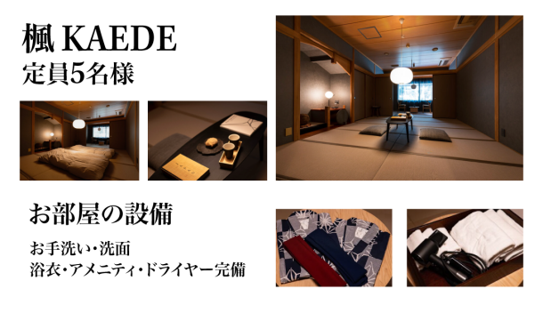
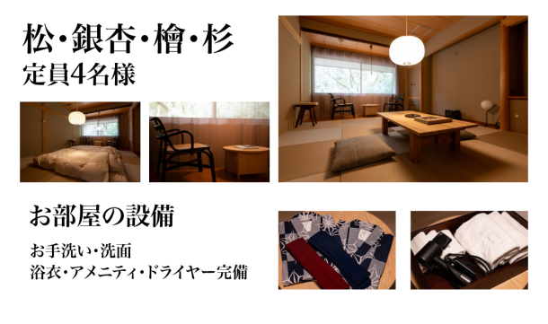
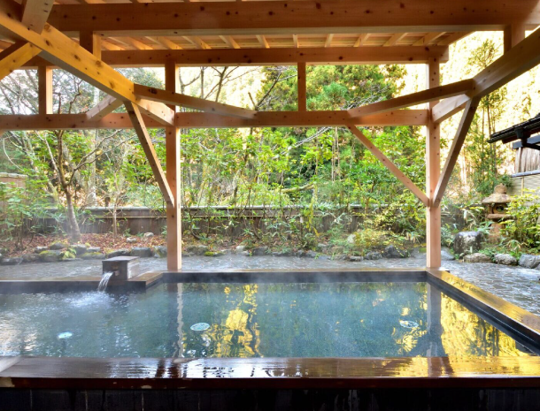
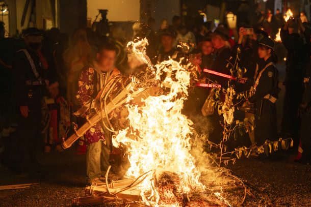

最新の情報は 公式サイトのツアーページ をご覧ください。
【限定宿泊プラン】 くらま温泉で迎える 鞍馬の火祭 特別な一夜
| マウンテンビュー | マウンテンビュー | |
| 2名様/1室 | – | ¥135,000(税込) |
| 3名様/1室 | ¥98,300(税込) | ¥96,600(税込) |
| 4名様/1室 | ¥78,750(税込) | ¥77,500(税込) |
| 5名様/1室 | ¥67,000(税込) | – |
| 京都駅～くらま温泉間の送迎オプション：1台33,000円（税込） | ||
| ご滞在について |
| 本プランには、くらま温泉でのご宿泊に加え、ご夕食、夜食、ご朝食、温泉入浴料、入湯税、宿泊税が含まれております。（大人・子ども同額） 鞍馬の火祭をゆったり満喫した後は、そのまま静かな鞍馬の夜へ。 お祭りの余韻に包まれながら、特別なひとときをお過ごしください。 |
| お部屋に関して | |
| 畳敷きの客室、大きな窓からは山の景色を楽しめます。 客室内にはシャワーやお風呂はございません。 |


※クリックで拡大※
| チェックイン・チェックアウト | ・チェックイン…14：00 ・チェックアウト…10：00 |
| お風呂・お食事の時間 | ・内風呂…朝7:30 – 夜24:00 ・露天風呂…朝7:30 – 夜21:00 ・夜食…夜19:00 – 23:00 ・朝食…朝8:30 ※夜食はうどん(小)をご用意しております |
| 設備・備品 | お手洗い・洗面・浴衣・タオル・ドライヤー |
| アメニティ | 歯ブラシ・ヘアブラシ・カミソリ・綿棒・コットン・ヘアゴム ※女性のみ クレンジングオイル・洗顔料・化粧水・乳液 |
本ツアーの募集は終了いたしました
＜お問合せフォームはこちら▶＞
＜MKトラベルTOPはこちら▶＞
＜おすすめツアー一覧はこちら▶＞
京都・洛北の山里「鞍馬」で、年に一度だけ開催される伝統行事「鞍馬の火祭」。
巨大な松明が夜の山里を照らし、熱気と幻想的な空気に包まれる、京都を代表する秋の祭礼です。
本プランは、鞍馬の地で唯一の宿泊施設「くらま温泉」に滞在しながら、鞍馬の火祭をゆったりと楽しむ特別宿泊プラン。
昼間の静かな山里風景から、夜の幻想的な火祭へ。そして祭りの後は、静寂に包まれた鞍馬の夜を味わう。
一年に一度だけ出会える、特別な滞在体験をお楽しみください。
| 💡このプランならではの魅力 | |
| 🔥鞍馬の火祭をクライマックスまで満喫 帰り時間を気にせず、火祭の終盤までゆったり見学。 祭りの余韻そのままに、お部屋へお戻りいただけます。 | |
| ♨ 鞍馬唯一の宿「くらま温泉」に宿泊 火祭当日の鞍馬で宿泊できる、特別感ある滞在プラン。 温泉に浸かりながら、ゆったりと秋の夜をお過ごしください。 | |
| ⛩ 神輿や松明を間近で体感 火祭終盤には、くらま温泉敷地内へ二基の神輿や松明が入ります。 宿泊者だからこそ味わえる、迫力ある祭礼の瞬間も魅力です。 | |
| 🌙 混雑の中でも“戻れる場所”がある安心感 お部屋や温泉で自由に休憩できるため、人混みの中でも安心。 ご自身のペースで火祭をお楽しみいただけます。 | |
| 🚖 京都駅発着送迎オプションもご用意 山間部への移動も安心。 京都駅～くらま温泉間の送迎オプション（1台33,000円/税込）もご利用いただけます。 |
滞在イメージ
| 2026年10月22日(金) | |
| 13:00 | 京都駅八条口MKタクシーのりば （送迎オプションご利用の方のみ） |
| 14:00頃 | くらま温泉（チェックイン） |
| 16:00 | くらま温泉 ＜山椒鍋御膳のご夕食／約50分＞ |
| くらま温泉にて少し早めのご夕食。 火祭当日ならではの特別な夜へ向けて、ゆったりとお食事をお楽しみください。 | |
| 17:00頃～ | 温泉・自由時間 |
| 温泉で身体を温めたり、お部屋でひと休みしたり、自由にお過ごしください。 火祭鑑賞へ早めに出かけるのもおすすめです。 | |
| 18:00頃～ | 鞍馬の火祭 鑑賞 |
| ＜自由行動＞それぞれのペースで火祭をご鑑賞ください。 ※19:00～23:00頃 くらま温泉にて夜食ご利用可能（ご休憩も可） ※20:30～21:00頃 山門前の石段へ大松明が終結～ ※21:50頃 火祭を町中で自由見学 | |
| 23:00頃～ | 火祭終盤・神輿見学 |
| くらま温泉敷地内で迫力ある神輿や松明を見学した後は、再び夜の鞍馬へ出かけるのも、お部屋へ戻って静かな余韻に浸るのも思いのまま。 時間に追われることなく、それぞれのスタイルで鞍馬の夜をご満喫いただけます。 | |
| 2026年10月23日(土) | |
| 8:30 | くらま温泉 |
| 10:00 | チェックアウト |
| 10:00または14:00 | くらま温泉にてMKタクシーお迎え （送迎オプションご利用の方のみ／京都駅着） |
※鞍馬の火祭は地域の伝統行事のため、当日の祭礼進行や混雑状況により、行程や帰着時間が変更となる場合がございます。祭りならではの臨場感とともに、時間に余裕をもってお楽しみください。
【オプション送迎ご利用の方へ】山道を通る、う回路を走行する場合もございます。車酔いしやすい方は酔い止めのご準備をおすすめします。
| 【服装・持ち物について】 | |
| 懐中電灯（道が暗いため） 雨具（天候によって） 歩きやすい靴（山道や坂道あり） 酔い止め（酔いやすい方） 動きやすい服装 防寒着（夜は冷え込みます） | |
| ※離れていても火の粉が降ってくる場合がございます。衣服や靴が焦げたり、穴が開く可能性がございますので、ご参加の際はナイロン等の熱に弱い素材の着用はお控えください。 |
くらま温泉【ご宿泊】

ご夕食は実山椒の香りと、ピリッとした辛みがアクセントの山椒鍋御膳

ゆったり温泉でおくつろぎください（サウナあり・朝もご利用可能）

敷地内から神輿を鑑賞できます（参加者限定）
写真提供：井上 裕康さん（hamnin1027ie）
鞍馬の火祭
写真提供：井上 裕康さん（hamnin1027ie）



★ツアースタッフによるレポート記事公開中★
【MKトラベルLINE公式アカウント】
MKトラベルの新規ツアー情報をLINEでお届けいたします

【各SNSでも京都の情報やツアー情報をお届けしています】


お申込みについてのご注意
※鞍馬の火祭は地域の伝統行事のため、当日の進行状況や交通規制等により、行程・時間が変更となる場合がございます。
※行程および帰着時間は交通事情などにより変更になる場合があります。
※当日は、くらま温泉周辺で大規模な交通規制が実施されます。
一般車両・バイク・自転車は進入不可となりますので、ご注意ください。
【規制時間（予定）】15:00頃～翌1:00～2:00頃
【規制区間】貴船口～くらま温泉口周辺（府道38号線沿い）
※京都駅⇔くらま温泉間の送迎オプションは事前予約制となります。
※鞍馬の火祭は雨天決行となります。雨具をご持参のうえ、防寒対策をしてご参加ください。（傘の使用が難しい場面もあるため、レインコート等がおすすめです）
※荒天等により祭礼内容が変更・中止となる場合がございます
※火祭見学は自由行動となります。混雑状況により見学場所が制限される場合がございます。
※夜間は冷え込みますので、防寒着・歩きやすい靴でのご参加をおすすめいたします。
※くらま温泉館内は一部時間帯に貸切利用・入浴制限が発生する場合がございます。
※お部屋タイプはお選びいただけません。予めご了承ください。
※相部屋設定はございません。
※旅行条件・旅行代金は、2026年5月1日現在を基準としています。
※鞍馬の火祭は雨天決行となります。
※お申込みの前に弊社の募集型企画旅行規約をご確認ください。
よくある質問
Q.火祭を楽しめるツアーは他にもありますか？
A.はい。宿泊ツアーのほかに、昼に鞍馬を散策後、火祭をお楽しみいただく「昼の鞍馬散策と夜の火祭へ」、夕方から鞍馬をお楽しみいただく「くらま温泉×鞍馬の火祭 観覧ツアー」をご用意しています。
Q.キャンセル待ちは可能ですか？
はい。キャンセル待ち中の方限定のツアーもございます。詳細はこちら
本ツアーの募集は終了いたしました
＜お問合せフォームはこちら▶＞
＜MKトラベルTOPはこちら▶＞
＜おすすめツアー一覧はこちら▶＞
・TACPOカード
・クレジットカード決済
・コンビニ決済
お支払方法詳細はこちら
お客様のご都合でご予約をキャンセルされる場合は、すみやかに下記お問合せ先までご連絡ください。
キャンセル料
20目に当たる日以前
無料
20日目から8日前まで
20%
7日目に当たる日以前
30%
旅行開始日の前日
40%
旅行開始日の当日
50%
旅行開始後又は無連絡
100%